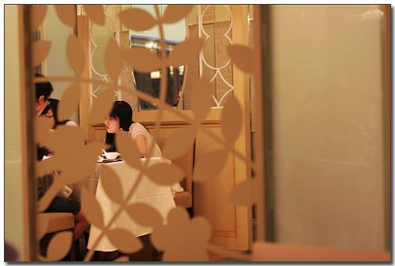
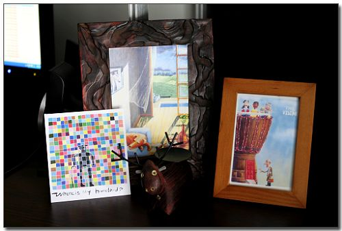

这一周是真正的社交周。
起初在问问家聚会，接下来迎送shuwua，周四迎来到南京开会的文心。不过每天晚饭后会看一部电影，这周印象深刻的是1965年法国6个导演拍摄的有关巴黎的短片，好老的镜头，但感觉片中呈现出的巴黎及巴黎人更真实。
昨天下午从1912的COSTA开始到创意集市、京采餐厅，晚饭后转战甘熙故居，凌晨一点多还在爱尔兰吧里聊啊聊啊，上帝也会佩服我们几个话佬的精力吧？就连上帝也不会拒绝可以让TA常常微笑的人啊！。。。中午起来看照片，黑眼袋非常吓人地显露在数码照片里，这一周本应遭受经前综合症的折磨，可是。。。可是就这么不知不觉地在友情的快乐中度过了。多希望我和我的朋友们，人生可以象这一周一样，常常被快乐围绕，与心不设防地友情相伴。
又是COSTA，总好过快餐口味浓重的STARBUCKS；

靠近1912的京采餐厅；

如今的“甘熙故居”又被打造成类似1912经营模式的吃喝玩乐之地，租金却便宜许多。CY问你可知道甘熙的意思？私人民宅而已，还有什么意思？

星期六1912的创意集市，转两圈才找到。只有“扑土”守摊，从内心到外在都热烈地与她握手，性格爽快的女孩子，我喜欢。文心挑选了“疯狂的赛车”和“云上的男人”，Sherry则喜欢那副“大果子镇”，摊位上未寻到。买下自己真心喜爱的作品先收藏着，等着日后升值~这些插画放在我家书架上无比相衬。
左一：WHERE IS MY HOMELAND？
对这副插画的情愫归结于自己对故乡模糊的概念，户口簿上是父亲出生成长的地方，护照上显示着我的出生地，而父亲的家乡我从来都不曾去过。童年的我在3个城市生活过，换了5所小学。。。这之后辗转反复，最终在南京停留。。。所以我对于HOMALAND毫无归属感，因为这种没有归属感的经历，第一眼看到问问创作的这副插画，端视许久，太多共鸣从胸中涌出。究竟故乡，于我，是在身边还是远方？
中间：趴在沙发上午睡的外外，夏天的风从窗外吹进来，拂起轻纱。这副插画除了外外之外，吸引我的是夏日午后的安宁意境。
右图：来自我看过的电影《The Visitor》。值得推荐的一部电影。

10 Responses to “Divided By Night”
2009-09-06
收获很多啊。
你家的小鹿好像对这些新伙伴也很倾心。
2009-09-06
哈哈~对哦~摇头晃脑地走在前面~
2009-09-06
恩恩，我就默默的看你在costa买饮料，然后你回头看我们这桌看了几眼。好像打招呼过去和你说，茶，我一直看你BLOG哦。。。不过还是没有勇气，觉得过了这样的年纪。。。喜欢你昨天的印花TEE以及鱼嘴鞋。我要做默默的粉丝。。。。
2009-09-06
好精彩的一周！分享被你过滤后的幸福也觉得内心荡漾。或者，你是浓缩了精华？
2009-09-06
可惜我回扬州了 不然 就可以与茶邂逅了~
你买的午后 也是我想要的:)
2009-09-07
恩，很开心的周末，每次来南京都很开心。原来我买的那副叫云上的男人！
2009-09-07
那个名字是她自己取的……哈哈，其实也挺不错的。
那副画的名字叫《墙》
2009-09-07
云上男人是我瞎取的名字，哈哈哈~
应该在插画背后显示一下名子，问问，你说是不是？
2009-09-07
创意集市，真不错，南京也有了艺术的聚集地。可惜这次我又错过了。
这里没有陌生人，只有未曾相识的朋友。—芬尼根
那家爱尔兰的芬尼根餐厅酒吧不错吧，比较安静，适合朋友小聚。周三还有牛排半价活动，折后价格是70-80RMB.下个周三打算去那给亚瑟过生日。：）
2009-09-08
南京的1912很有感觉，COSTA里面的女孩都好漂亮。
Leave A Reply
存档只读，评论已关闭。